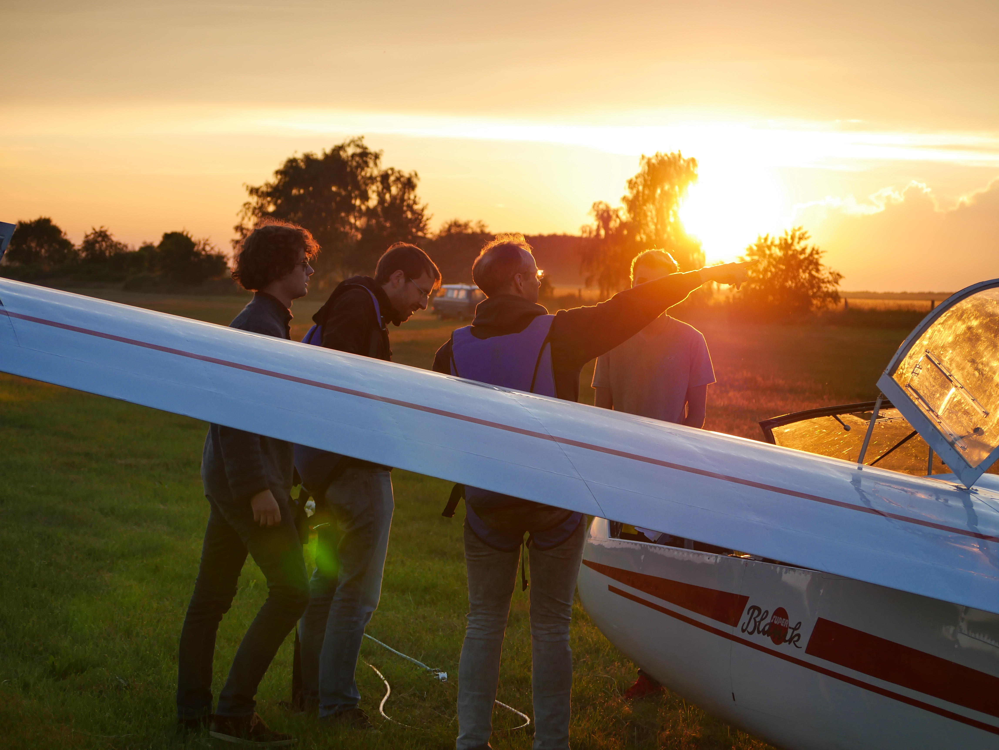

Segelfliegen verbindet Naturwissenschaft, Technik, Verantwortung und Teamarbeit. Schulkooperationen können jungen Menschen einen praxisnahen Einblick in den Luftsport und den Vereinsalltag geben.
Kooperation mit der Kopernikus-Schule Berlin
Seit 2003 besteht die Kooperation über die »Segelflug-AG« zwischen dem Aero-Club Berlin e. V. und der Kopernikus-Oberschule, bei der Schülerinnen und Schüler (ab 14 Jahren) als Flugschüler lernen können, ein Segelflugzeug selber zu fliegen. In dieser Zeit haben mehr als 250 Schülerinnen und Schüler der Kopernikus-Oberschule im Rahmen einer wöchentlichen theoretischen Ausbildung Wissen und Kenntnisse in Aerodynamik, Technik, Navigation, Flugwetterkunde, Luftrecht, Segelflugzeugkunde, Verhalten in besonderen Fällen und menschliches Leistungsvermögen erhalten. In jedem Jahr haben diese Schüler dann ihr theoretisches Wissen in einer Segelflugwoche im Juni in die Praxis umsetzen können.
Das Anliegen ist es, für Jugendliche ab 14 Jahren eine sinnvolle und das Gemeinschaftsleben fördernde Freizeitaktivität zu schaffen. Ziel ist dabei auch das Heranführen der Schüler an Ausbildungsperspektiven im Luftfahrtbereich. Es ist auch Starthilfe zur Erlangung der Pilotenlizenz in unserem Verein, mit dem die Schule gemeinsam die theoretische Ausbildung der Schüler organisiert.
In den letzten Jahren wurde das Projekt auf weitere Schulen erweitert. Zurzeit sind regelmäßig Schülerinnen und Schüler von der Alfred-Nobel-Schule dabei, die durch das Unterrichtsfach "Luftfahrt" gut vorbereitet sind. In der Vergangenheit haben wir auch Teilnehmer vom Paulsen Gymnasium und von der Berthold-Otto-Schule in Reinsdorf begrüßt.

Kooperation mit der Emanuel-Lasker Oberschule Berlin
Seit 2015 besteht weiterhin die Kooperation über die »Segelflug-AG« zwischen dem Aero-Club Berlin e. V. und der Emanuel-Lasker-Oberschule. Sie ist ähnlich organisiert, wobei es meistens eine kleinere Gruppe ist, welche den Flugplatz nur an drei Tagen besucht.

Weiter entdecken